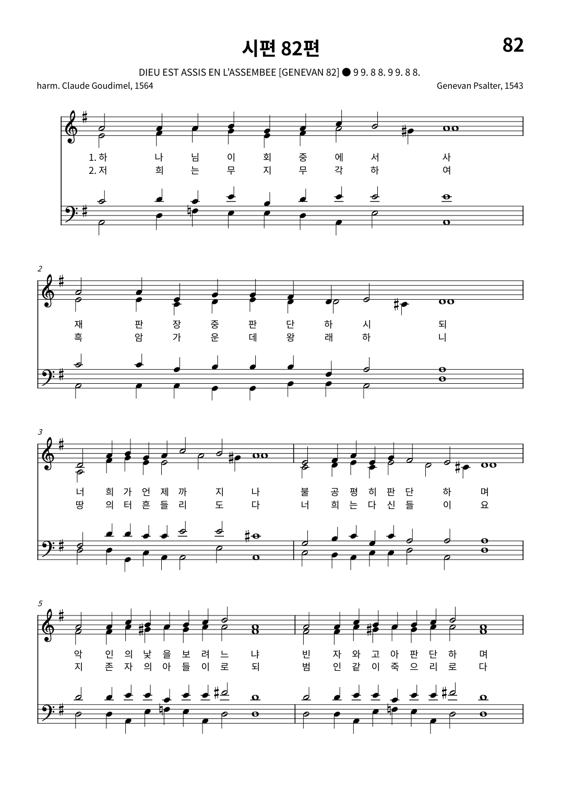

Psalm 82
DIEU EST ASSIS EN L’ASSEMBEE [GENEVAN 82] · 9 9. 8 8. 9 9. 8 8.
English title: In Solemn Courts the Gods Assemble
Tune: Genevan Psalter, 1543 · Harmony: Claude Goudimel, 1564 · Lyrics: Korean adaptation of Psalm 82 from the Korean Revised Version (AI draft adaptation · not yet theologically reviewed) · 2 stanzas
Score PDF MusicXML (for printing) MusicXML (for accompaniment, with prelude and repeats) Read Psalm 82 (Korean Revised Version)
Score
← Psalm 81B ListAccompaniment (in preparation)Psalm 83 →
Lyrics (Korean)
Stanza 1 (Ps. 1-4)
하나님이 회중에 서사
재판장 중 판단하시되
너희가 언제까지나
불공평히 판단하며
악인의 낯을 보려느냐
빈자와 고아 판단하며
궁핍한 자 구원하며
악인 손에서 건지라
하나님이 회중에 서사
재판장 중 판단하시되
너희가 언제까지나
불공평히 판단하며
악인의 낯을 보려느냐
빈자와 고아 판단하며
궁핍한 자 구원하며
악인 손에서 건지라
Stanza 2 (Ps. 5-8)
저희는 무지무각하여
흑암 가운데 왕래하니
땅의 터 흔들리도다
너희는 다 신들이요
지존자의 아들이로되
범인같이 죽으리로다
일어나 판단하소서
열방 주의 기업이라
저희는 무지무각하여
흑암 가운데 왕래하니
땅의 터 흔들리도다
너희는 다 신들이요
지존자의 아들이로되
범인같이 죽으리로다
일어나 판단하소서
열방 주의 기업이라